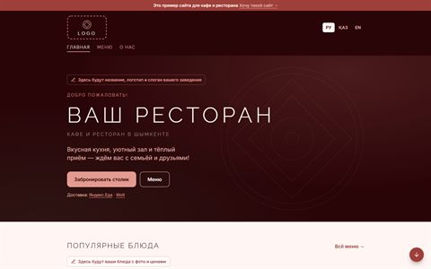
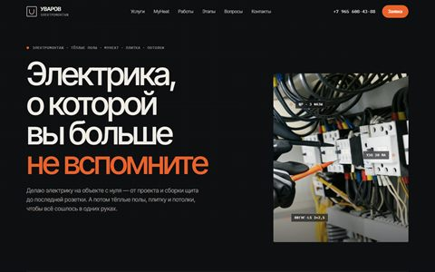
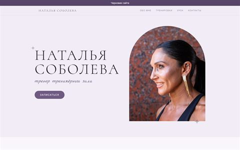

Мои работы
Сайт для кафе и ресторана

Демонстрационный проект, 2026. Демо: заведение вымышленное, пометки «Здесь будет ваш…» оставлены намеренно.
Для кого: Кафе и рестораны Шымкента и других городов Казахстана.
Задача: Показать владельцу заведения, как будет выглядеть его сайт, ещё до начала работы — на живом примере, а не на словах.
- Три языка: русский, казахский, английский
- Меню с ценами, акции, ссылки на доставку
- Бронь столика через WhatsApp
- Страницы: главная, меню, о нас
Особенность: Сайт подготовлен как основа: для нового заведения меняются название, логотип, меню и контакты.
Технологии: Astro, адаптивная вёрстка, мультиязычность.
Открыть сайт
Электромонтажник Артём

Сайт частного мастера, 2026. Опубликованный сайт мастера.
Для кого: Частный мастер: электромонтаж, тёплые полы, плитка, потолки.
Задача: Объяснить услуги и показать работы так, чтобы было понятно, к кому обращаешься, и дать мастеру возможность обновлять сайт самому.
- Услуги, работы, этапы, частые вопросы и контакты
- Тёмный «инженерный» стиль с подписями на фото щита
- Кнопки связи, включая Telegram
Особенность: Своя админка: тексты, цены и фотографии меняются без программиста и без правки кода.
Технологии: HTML, CSS, JavaScript, своя админка, без сборки.
Открыть сайт
Наталья Соболева — тренер

Личный сайт специалиста, 2026. Сайт в доработке: сверху пока стоит плашка «Черновик сайта».
Для кого: Тренер тренажёрного зала и её будущие ученики.
Задача: Спокойно и аккуратно рассказать, кто она, какие тренировки ведёт и как записаться.
- Разделы: обо мне, виды тренировок, видеоурок, контакты
- Нежная палитра и антиква в заголовках
- Загруженные фото сайт уменьшает сам, чтобы страница открывалась быстро
Особенность: Простая панель управления: текст, фото и видео меняются из браузера, все прошлые версии сохраняются.
Технологии: Astro, Pages CMS, оптимизация фото.
Открыть сайт
Обо мне
Привет! Меня зовут Дмитрий, я делаю сайты для малого бизнеса и частных специалистов: кафе, ресторанов, зоомагазинов, мастеров, тренеров.
Начинаю не с картинки, а с вопроса: что сайт должен делать для вашего дела. Дальше веду проект сам, от первого обсуждения до публикации в интернете, поэтому на связи с вами всегда один и тот же человек.
КАК Я РАБОТАЮ
- Разрабатываю сайт под задачи конкретного бизнеса
- Стараюсь делать интерфейс понятным: человек быстро находит, что искал
- Сразу учитываю телефоны: многие клиенты придут именно с них
- Согласовываю с вами основные этапы, чтобы результат не стал сюрпризом
- Дизайн и вёрстку делаю сам, без конструкторов
ЧТО ВЫ ПОЛУЧИТЕ
- Сайт, опубликованный в интернете и готовый к работе
- Аккуратную версию для телефонов и компьютеров
- Кнопки связи в WhatsApp, Telegram или на почту
- Если нужно, простой способ менять тексты и цены самим
P.S. Этот сайт тоже сделал я. Окна можно таскать, а этот блокнот даже редактировать :)
Обсудить ваш проект: Пуск → Заказать сайт
Услуги
Сайт-визитка
Несколько разделов о вас: чем занимаетесь, что предлагаете и как связаться. Клиент быстро находит главное.
Лендинг
Одна страница под конкретную услугу или предложение. Всё ведёт к одному действию: оставить заявку.
Сайт для малого бизнеса
Услуги, цены, фотографии и способы связи для кафе, мастеров и специалистов. При необходимости — простая панель, чтобы менять тексты самим.
Многостраничный сайт
Отдельные страницы под разные разделы и понятная навигация между ними. Можно на нескольких языках.
Доработка существующего сайта
Исправляю ошибки, обновляю блоки и тексты, добавляю то, чего не хватает, не переделывая всё заново.
Адаптация под телефоны
Привожу сайт в порядок на смартфонах и планшетах: текст читается, кнопки нажимаются, ничего не обрезается.
Как проходит работа
- Обсуждение. Выясняем, какой сайт нужен и какие задачи он должен решать.
- Планирование. Определяем структуру и основные функции.
- Разработка. Создаю сайт и адаптирую его под разные устройства.
- Согласование. Показываю результат и вношу согласованные правки.
- Публикация. Размещаю готовый сайт в интернете.
Отзывы
Отзывов пока нет. Надеюсь, именно ваш отзыв станет первым!
Заказать сайт и контакты
Напишите, какой сайт вам нужен и какую задачу он должен решать: